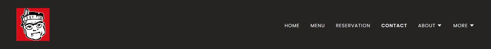
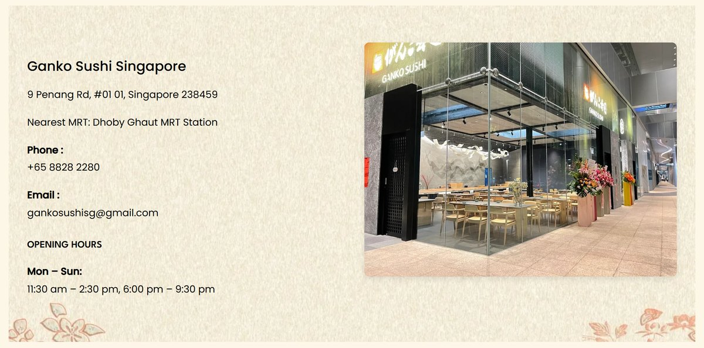
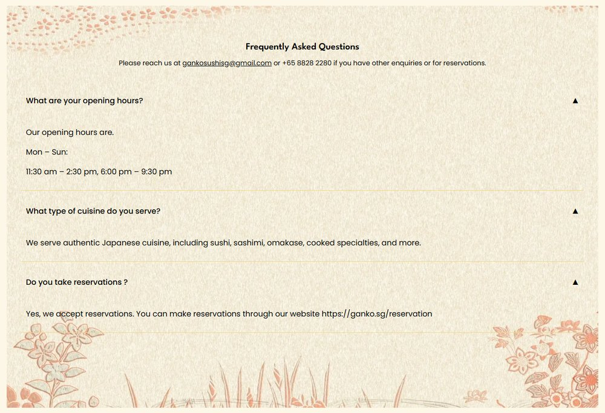

Ganko.sg
Ganko Sushi Singapore
Sixty years of sushi, one Singapore flagship.
Ganko Sushi began in 1963 as a small eatery in Osaka. Its Singapore restaurant needed a site that carries that heritage, lets the food and the room do the selling, and makes booking a table effortless.
- Design
- The page flow, layouts and visual design, from scratch. The client set the goal and the information that mattered; everything else was mine.
- Development
- Built in GoDaddy Website Builder, mixing its layouts with custom HTML sections, and the Chope booking widget embedded in the page.
- Delivery
- Eight pages, responsive on desktop and mobile. Launched in 2025.
- Collaboration
- Solo, working directly with the client.
Let the restaurant speak first.
-
Heritage first
The story starts in Osaka.
The About pages set archival photographs of the founding team beside today's Singapore kitchen, on a washi-paper background.

-
Photography leads
The food and the room do the talking.
Copy stays short. Dishes, interiors and the chefs at work carry each page, set in an asymmetric gallery of varied crops and heights.

-
Booking on-site
Book a table without leaving.
The Chope booking widget is embedded in the Reservation page, beside the address and opening hours, so guests never leave ganko.sg to book.

Eight pages,two journeys.
Guests either want to get to know the restaurant or book a table, so the navigation splits along those lines.
- Home
- TraditionAbout
- HospitalityAbout
- Menu
- HomeBook now
- ReservationChope, embedded
- ContactHours · map
Also under More: FAQ · Careers
Warm, paper-toned, one loud mark.
- Charcoal#262323
- Rice paper#FDF7E7
- Washi#F0EAD8
- Ganko red#D90C18



Bespoke, insidea site builder.
GoDaddy's builder was the client's choice — their team already knew it, so they can keep the site up to date themselves. The work was making a template tool feel made for the restaurant: the builder's own layouts mixed with custom HTML sections wherever its blocks fell short.


OutcomeLaunched in 2025 — eight pages, booking through an embedded Chope widget, and a site the client's team can update themselves.
ganko.sg
Have a project like this in mind?
Start a project